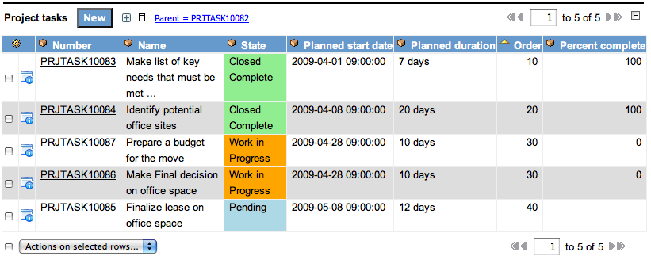

Legacy:Project Management
From ServiceNow Wiki
Legacy:Project Management
| |
Functionality described here requires the Project Management (PM) plugin. |
| |
Note: If a project overlaps a Daylight Savings Time change, the project may exhibit a 1 hour time discrepancy. |
Contents
1 Overview
The Project Management application aids in planning, organizing and managing projects and resources in order to setup, execute, and complete a project faster and easier.
2 Creating a New Project
- Navigate to the Project Management application, and click 'Create New'.
- Fill out the project name and planned start date (this information is necessary for every project).
{kind=link}
- Fill in the rest of the details as you deem appropriate. Project lead, and sponsor are optional attributes that are used for reference purposes only. The 'Estimated cost' field is calculated based on the estimated costs of all of your children tasks.
- Click the 'Submit' button.
3 Creating Project Tasks
- To create tasks inside of a project go to the 'Pending' module on the left hand side under the 'Projects' heading, and then select the project you want to work with.
- At the bottom of the project, you'll see a related list of project tasks. Click the 'New' button and give it a name ('Phase 1' or something to that effect) and duration.
- Click Submit.
- All tasks in the project can be one of two things: a grouping, or a task. The two are defined as follows:
- A grouping is any task that has tasks below it (which you can see in the related list at the bottom of each task). This is an easy way to visually group tasks into phases.
- A task has no tasks below it, and will therefore eventually be worked.
- Example:
- You create a project, and name the project Test.
- Now you create a project task inside of Test, and call the task Phase 1. This task right now is a lower level task that, if assigned to somebody, will show up in their My Work queue and be worked and closed.
- To make the task Phase 1 a group, you open Phase 1 and add a child task by clicking new on the related list. Now Phase 1 can still be assigned so somebody, and will still show up in the My Work queue, but cannot be worked. This task now just displays the tasks beneath it, and their progress.
- An easy way to see the entire collection of tasks and groupings is by opening the Gantt Chart.
4 Gantt Chart
- The 'Gantt Chart' related link will take you to a time line view of the project.
- From this view you can see what tasks depend on each other and which tasks are completed, currently being worked, and still pending.
- Color Key:
- Black: A parent, or grouping of tasks.
- Green: A task that has been worked and whose state has been moved to 'Closed Complete'.
- Orange: A task that is currently being worked.
- Blue: A task that is waiting for its predecessors to end.
- Color Key:
- From this time line view you can double click on any task, which will pop open the form of that task.
- You can change details from this form and click submit.
{kind=link}
5 The Ordering Concept
- Each project task will have a sequential order that is automatically generated by the system.
- These orders are an easy way to create dependencies, but are just a suggestion and can be manually changed.
- The concept is that each task that you insert will be assigned a multiple of 10.
- The tasks with order 10 will be the first tasks to start and be worked, where the tasks of order 20 will wait until all 10's are closed.
- 
{kind=link}
- For example: "Make list of key needs" was worked first, while "Identify potential office sites" awaited "Make list of key needs" closure. When it was closed "Identify potential office sites" was opened and worked. "Prepare a budget" and "Make Final decision" wait for "Identify potential office sites" to close, and then they start simultaneously. "Finalize lease on office space" will have to wait till both tasks with an order of 30 are finished and closed before it can start. (see above picture for reference of task names)
- To change the order of a task, go to the Related List and double click on the order that you wish to change.
6 The Automation Concept
- Each project will have the option to be managed manually, or automated by the system.
- To control this functionality, there is a checkbox on the project form.
- When checked the system will:
- Calculate the planned start date of a new task.
- Calculate the planned end date on project tasks based on the planned duration that is provided.
- Calculate the planned end date of the project based on the durations of all child tasks in the project.
- Calculate the actual duration when the task is closed.
- Applies security to several fields including:
- Percent Complete
- State
- Planned Start and End date
- Actual Duration
- When the Automate checkbox is unchecked, all of these calculations and security are turned off. This allows you to make tasks completely independent of each other. Each task can have completely unique start and end dates. Keep in mind that by doing this, you start and stop each task by manually changing its state. You must also fill out your actual start, end and durations manually on both the project and project task.
- If the user, when creating a project, does not check the automation box then all the values will have to be entered by that user. Under this setting there will not be any automation calculation.
7 Creating a Project from a Template
- You can create a template from any existing project in the system.
- Navigate to the Project Management application, and click 'Create New'.
- Fill out the project name and planned start date.
- Now choose a template. When submitted, this new project will essentially be a new copy of the template.
{kind=link}
- Now right click on the Project heading and click 'Save.'
{kind=link}
- At the bottom of the project you will see that it copied over all the project tasks of the applied template.
{kind=link}
- You can now go through your project and change any durations that may need updated, or add and delete tasks that may or may not be appropriate.
8 Project Start and Task Close
- After you have built your project with the numerous groups and tasks, there are two ways to start your project.
- The first way is the easiest. Just forget about it, because there is a trigger in the system that will start your project automatically on the Planned Start Date and time of the Project.
- If you want the project to start earlier than its Planned Start Date, you can push the 'Start Project' button on the Project form.

- When the project 'starts' the state of the project moves to 'Work in Progress' and so does the first ordered tasks.
- When the last task of the project has completed, the projects state will more to 'Closed Complete.' The percent complete will move to 100, and the actual duration will be calculated.
8.1 Task Close
- To close a task that is in 'Work in Progress,' click the 'Close Task' button and the top or bottom of the project task.
{kind=link}
Was this article helpful?
Yes, I found what I needed
No, I need more assistance